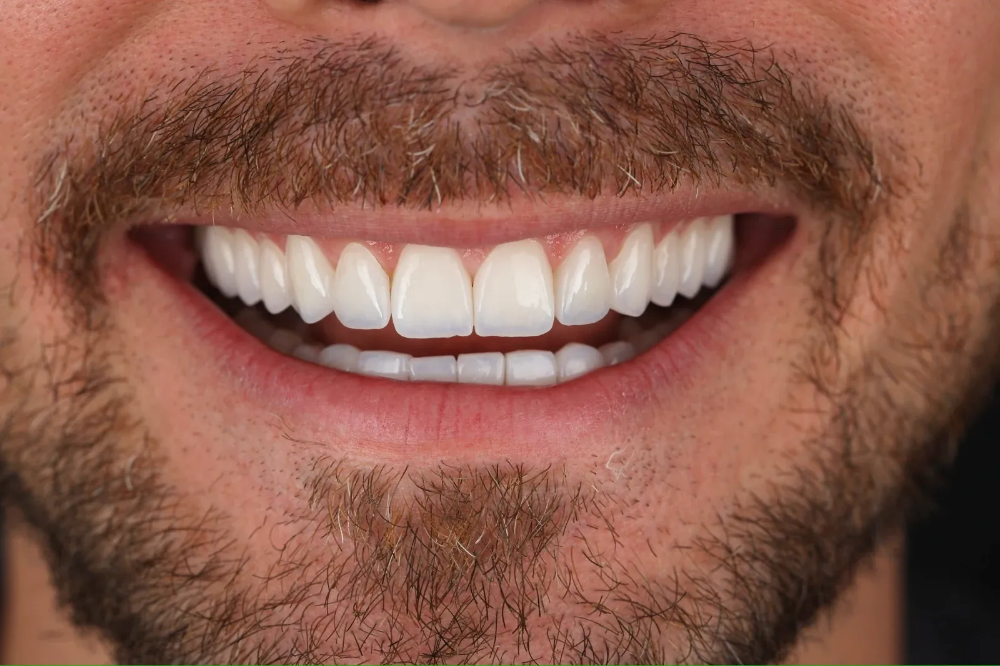
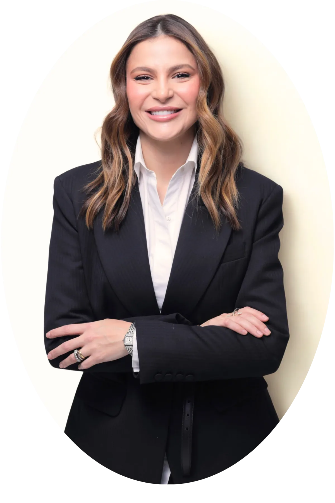
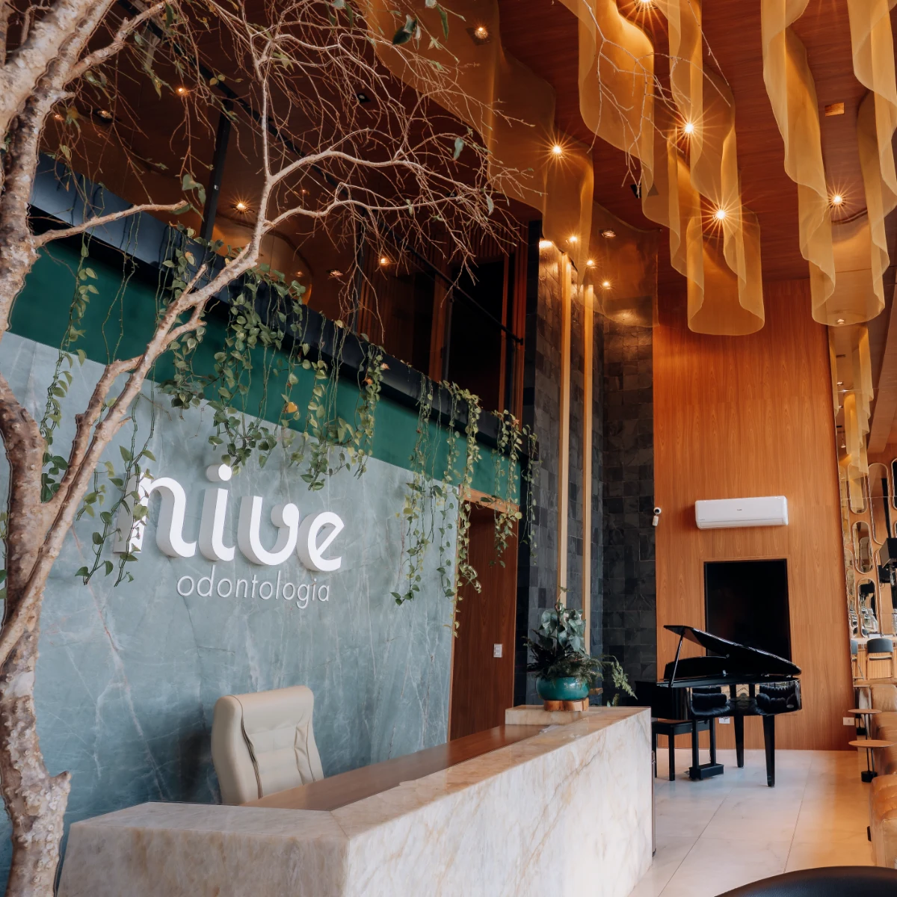
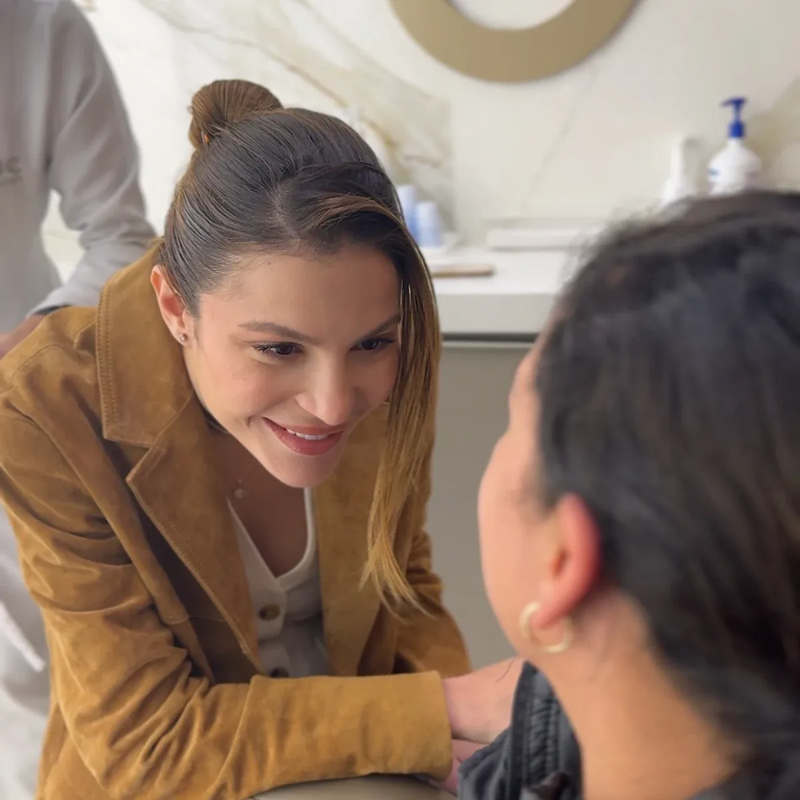
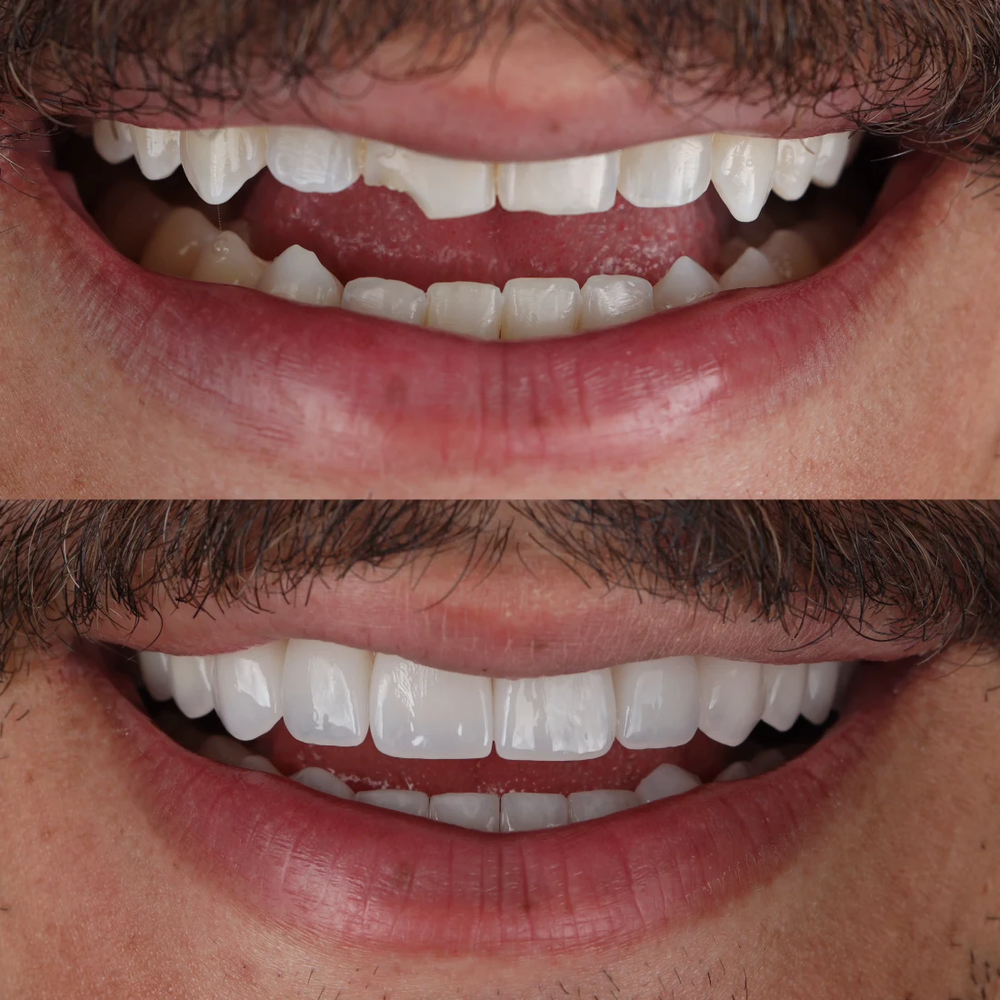
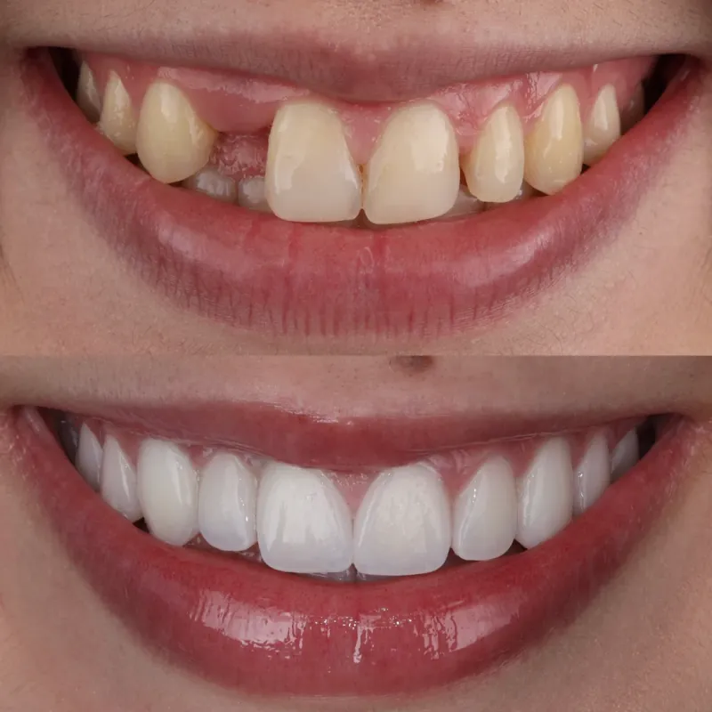
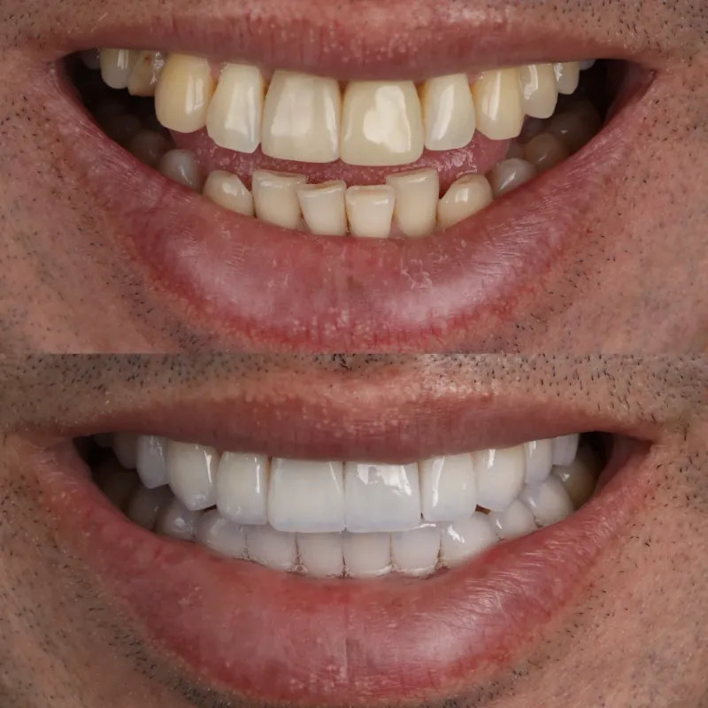

WORKSHOP
Lentes de Porcelana
42% dos ingressos vendidos — de R$ 97 por R$ 19
Para conseguir mais pacientes de lentes de porcelana, você precisa mostrar bons casos.
Mas, para ter bons casos para mostrar, você precisa primeiro conseguir pacientes que confiem em fazer porcelana com você.
E é aí que muita gente fica presa.
Você vê outros profissionais executando casos de R$ 10 mil, R$ 20 mil ou mais. Sabe que existe demanda. Sabe o quanto a odontologia estética pode valorizar seu trabalho.
Mas existe uma distância enorme entre conhecer as lentes de porcelana e realmente começar a trabalhar com elas.
Porque estética não admite improviso. O paciente não procura apenas dentes funcionais.
Ele procura um resultado bonito. Natural. Harmônico.
E, antes de colocar milhares de reais naquele tratamento, é natural que queira olhar para o seu trabalho e pensar:
“É isso que eu quero para mim.”

O problema?
Se você ainda não construiu esses casos, não tem o que mostrar.
Enquanto ele não se rompe, a porcelana continua sendo uma possibilidade distante — e não uma frente real do seu consultório.
O Workshop Lentes de Porcelana foi criado para ajudar você a romper esse ciclo.
42% dos ingressos vendidos — de R$ 97 por R$ 19
Precisa saber construir os primeiros.
No sábado, 26 de setembro, das 8h às 12h, eu vou construir com você um plano de ação para começar a ocupar seu espaço na odontologia estética com lentes de porcelana.
E não será uma manhã para simplesmente assistir a mais uma aula.
Você vai sair do Workshop com clareza sobre o que fazer a partir dali.
Vamos construir juntos o caminho para:
01
Encontrar oportunidades para seus primeiros casos
Quem são os pacientes mais interessantes para começar, onde essas oportunidades normalmente estão e como criar uma condição estratégica para tirar seus primeiros casos do papel.
02
Selecionar os casos certos
Nem todo paciente é um bom primeiro caso.
Você vai entender o que observar antes de aceitar um tratamento e por que a escolha correta pode facilitar — ou complicar muito — sua entrada na porcelana.
03
Planejar pensando no resultado estético
Vamos analisar casos reais e entender as decisões que existem por trás de um sorriso bonito: indicação, planejamento, proporção, formato, cor, naturalidade e os detalhes que separam um resultado comum de um resultado que gera desejo.
04
Transformar seus primeiros atendimentos em portfólio
Um bom caso não termina quando o paciente levanta da cadeira.
Você vai entender como pensar seus primeiros casos também como a construção do ativo que dará mais segurança para os próximos pacientes escolherem você.
05
Construir seu plano de ação
Ao final da manhã, você não vai sair apenas com anotações.
Vai sair com um plano para entender:
Precisa ser o caso que abre caminho para os próximos.
Talvez hoje você pense:
“Mas como vou convencer alguém a fazer porcelana comigo se ainda tenho poucos casos?”
É justamente aqui que entra uma estratégia importante para quem está começando.
Imagine estruturar um primeiro caso de 10 lentes por R$ 8.000 — um valor abaixo do que muitas clínicas populares já cobram.
O objetivo desse primeiro atendimento não é maximizar sua margem.
É construir ativos muito mais importantes para este momento:
Mesmo em uma condição estrategicamente mais acessível, existe espaço para custear laboratório, investir no seu aperfeiçoamento e transformar aqueles dias de atendimento no começo de uma nova frente dentro da clínica.
Porque, à medida que sua técnica, segurança e portfólio crescem, muda também o tipo de caso que você consegue assumir — e o valor percebido pelo paciente.
Um único caso bem construído pode continuar trabalhando por você muito depois de o paciente sair do consultório.
Essa será uma das partes mais importantes da manhã.
Porque porcelana não se domina apenas decorando protocolos. É preciso desenvolver olhar.
Ao analisar diferentes situações clínicas, eu vou mostrar como enxergo cada caso e os detalhes que influenciam diretamente o resultado final:
Você vai começar a perceber detalhes que antes poderiam passar despercebidos.
E entender por que dois casos tecnicamente semelhantes podem terminar com resultados estéticos completamente diferentes.
Diploma importa. Formação importa. Experiência importa.
Mas, diante de um tratamento estético de alto investimento, existe uma pergunta que pesa muito:
“Eu gosto do que esse profissional consegue entregar?”
Por isso, construir um portfólio não é apenas uma questão de marketing.
É consequência de desenvolver técnica, repertório e olhar suficientes para produzir resultados que mereçam ser mostrados.
E esse é o objetivo maior do Workshop:
ajudar você a começar a construir os casos que um dia farão o paciente chegar ao seu consultório já querendo fazer porcelana com você.
Este Workshop é para o dentista que:
✓já atua clinicamente e quer incorporar procedimentos de maior valor ao consultório;
✓se interessa por odontologia estética, mas ainda realiza poucos casos de porcelana;
✓sente que poderia oferecer lentes para mais pacientes, mas ainda não tem segurança técnica ou portfólio suficientes;
✓quer entender melhor como planejar casos estéticos de alto nível;
✓quer construir um portfólio que aumente a confiança do paciente em seu trabalho;
✓procura crescer financeiramente através de uma odontologia melhor executada — e não de promessas fáceis de faturamento.
Este Workshop NÃO foi pensado para especialistas em prótese que já executam porcelana em alto nível.
Também não é uma formação completa em lentes.
Em quatro horas, ninguém se torna especialista em porcelana.
O objetivo é outro:
mostrar o caminho para você começar de forma muito mais inteligente e enxergar tudo o que precisa dominar para transformar porcelana em uma frente real do seu consultório.



QUEM VAI CONDUZIR O WORKSHOP
Sócia-fundadora da Nive Odontologia e referência em estética e porcelana.
Bruna Veiga está à frente da Nive Odontologia — clínica e laboratório que, ao lado de Felipe Veiga, se tornaram referência em reabilitação estética e lentes de porcelana, recebendo pacientes de todo o Brasil e do exterior.
Dentro da Nive, ela desenvolveu uma visão apurada sobre estética, acabamento e resultado final — os detalhes que fazem uma lente deixar de parecer artificial e passar a se integrar de forma natural ao sorriso.
Hoje, a operação produz centenas de lentes de porcelana todos os meses.
Mas essa história não começou pronta. Antes desse nível de refinamento, Bruna viveu problemas que muitos profissionais enfrentam ao entrar na porcelana:
Foi essa insatisfação que a fez mergulhar no universo da cerâmica e desenvolver um olhar próprio sobre estética, naturalidade e previsibilidade — o mesmo olhar que será parte central do Workshop.
Durante a manhã, ela vai mostrar como analisa casos, o que observa antes de começar, quais decisões influenciam o resultado e quais erros fazem uma lente perder naturalidade.
08hO caminho dos primeiros casos
Por que tantos dentistas ficam presos entre “ainda não sei fazer” e “ainda não tenho pacientes” — e como começar a quebrar esse ciclo.
09hConstruindo seus primeiros casos
Como encontrar oportunidades, selecionar pacientes e estruturar uma condição inteligente para começar a construir experiência e portfólio.
10hAnálise de casos reais
Indicação, planejamento, estética e decisões que influenciam o resultado final, comentadas por mim.
11hSeu plano de ação
Como transformar os primeiros casos em portfólio e organizar os próximos passos para começar a trabalhar com lentes de porcelana.
Encerramento previsto: 12h.
Que você consiga olhar para sua realidade e dizer:
“Agora eu sei qual é o meu próximo passo para começar a construir meus casos de porcelana.”
Em vez de terminar a manhã com dezenas de páginas de anotação que nunca sairão do papel…
Você terá uma direção.
42% dos ingressos vendidos — de R$ 97 por R$ 19
O Workshop Lentes de Porcelana é um evento 100% patrocinado e organizado pela Formação Lentes Impecáveis em Porcelana — FLIP.
A FLIP nasceu para ajudar dentistas a iniciarem ou elevarem o nível dos seus trabalhos com lentes de porcelana — dominando desde o planejamento dos casos até a execução e a construção de resultados de alto padrão.
Sabemos que nada disso é ensinado nas faculdades, e uma das formas de aproximar mais dentistas desse conhecimento é promovendo eventos como este, com um valor de ingresso muito abaixo do que normalmente seria cobrado por uma manhã de conteúdo prático.
Durante o Workshop, 90% do tempo será dedicado ao conteúdo e à construção do seu plano de ação.
Ao final, para quem quiser continuar se aprofundando, apresentaremos a Formação Lentes Impecáveis em Porcelana — FLIP e liberaremos uma condição especial para os participantes do evento.
{{ pa.t }}



A questão é:
quando eles chegarem até você, o seu trabalho estará pronto para ser escolhido?
Todo profissional que hoje possui dezenas ou centenas de casos para mostrar precisou começar pelos primeiros.
No sábado, 26 de setembro, eu quero ajudar você a construir esse começo.
Garanta agora seu ingresso no Lote 0.
42% dos ingressos vendidos — de R$ 97 por R$ 19
42% vendidos · R$ 97 por R$ 19